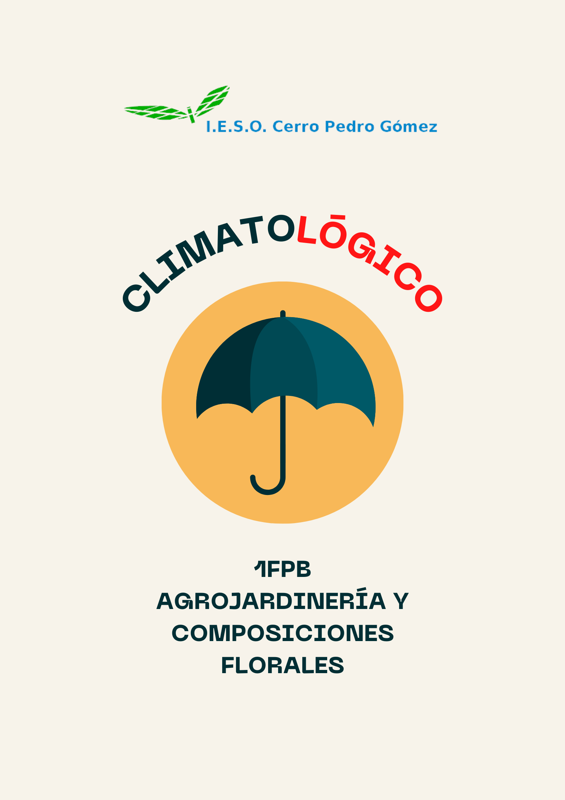

Climatológico
¡¡RING!! ¡¡RING!!... Suena el despertador, las 7 a.m. ... subimos la persiana y vemos que está lloviendo ... vaya ... ¡a ver que me pongo con esta lluvia!.
Mientras buscas tus botas piensas ... ¿Para qué sirve la lluvia?, ¿por qué está lloviendo precisamente hoy?
Para dar respuesta a estas y otras preguntas os proponemos este recurso educativo.

En los medios se habla del cambio climático, el tiempo está cambiando pero ¿qué es el clima? ¿Cómo influye en el objeto de estudio de nuestro especialidad, las plantas? A lo largo de esta unidad vamos descubrir qué es el clima, los elementos que lo componen y los diferentes tipos de clima que existen.
Pero eso no es todo, ¡el conocimiento hay que compartirlo, comencemos!